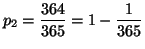
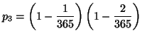
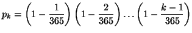

Le paradoxe des anniversaires et la cryptographie
Le paradoxe des anniversaires

Dans une classe, quelle est la probabilité pour que 2 élèves fêtent leurs anniversaires le même jour? Avec 365 jours par an, une trentaine d'élèves dans la classe, on se dit qu'elle doit être faible... Détrompez-vous! On va calculer la probabilité pour que, dans un groupe de k personnes, ces personnes aient toutes un jour d'anniversaire différent.
- Qd on a 2 personnes, la première peut avoir son anniversaire n'importe quand, la seconde n'importe quel autre jour. On a donc :
 - Quand on a 3 personnes, la troisième doit avoir son anniversaire un jour différent des 2 autres :
 - On peut réitérer le raisonnement. Pour un groupe de k personnes, on obtient :

| Nombre de personnes | Probabilité pour que les anniversaires tombent tous un jour différent |
| 1 | 1 |
| 2 | 0.99 |
| 5 | 0.97 |
| 10 | 0.88 |
| 20 | 0.58 |
| 22 | 0.52 |
| 23 | 0.49 |
| 30 | 0.29 |
| 50 | 0.03 |
Le problème des fonctions de hachage
Ce paradoxe a son importance en cryptographie, lorsqu'on étudie les fonctions de hachage. Une telle fonction calcule le résumé d'un texte; ceci est important dans les protocoles de signature électronique, ou simplement si on veut s'assurer qu'un texte a été transmis sans altération.
Pour que cette méthode soit fiable, il faudrait dans l'idéal que deux textes différents ne puissent pas avoir le même résumé. C'est bien sûr impossible, car l'espace des textes
est beaucoup plus gros que l'espace des résumés. On souhaite donc plutôt que la probabilité que deux textes aient le même résumé soit très faible. Plus précisément, si on veut que la fonction de hachage résiste à une attaque, il faut qu'un attaquant ne puisse pas produire un texte ayant le même résumé que le texte initial. Pour cela, il faut donc que l'attaquant doive produire un très grand nombre de textes avant d'en trouver un qui a le même résumé que le texte initial. On rentre ici tout à fait
dans le problème du paradoxe des anniversaires.
Si le haché (= le résumé) est codé sur b bits, il y a 2b résumés possibles. Si l'on prend k textes différents, la probabilité pour que 2 textes aient le même haché est donc :
| Taille du haché (en bits) | Nombre de textes à essayer |
| 8 | 13 |
| 16 | 213 |
| 32 | 54562 |
| 64 | 9,6×109 |
| 128 | 1,5×1019 |
| 160 | 1,0×1024 |
| 256 | 2,8×1038 |
Paradoxe des anniversaires et sécurité du wifi
Le paradoxe des anniversaires a aussi eu des implications concernant la sécurité du protocole WEP,
protocole utilisé jusqu'en 2004 pour sécuriser les échanges Wifi. Ce protocole fonctionnait
de la façon suivante (nous modélisons un échange de données entre une box internet et un ordinateur). La box internet est en possession d'une clé.
Cette clé est assez longue (typiquement 104 bits), et doit être entrée manuellement sur l'ordinateur. Les deux appareils s'échangent ensuite un vecteur
d'initialisation de la taille de 24 bits. Cette clé et ce vecteur alimentent ensuite un algorithme de chiffrement par flots, RC4. Celui-ci produit, à partir de la clé et du vecteur d'initialisation, une suite pseudo-aléatoire de 0 et de 1. Cette suite est ensuite
ajoutée au message clair comme dans le chiffre de Vernam (par un ou exclusif) pour constituer le message chiffré.

Consulter aussi